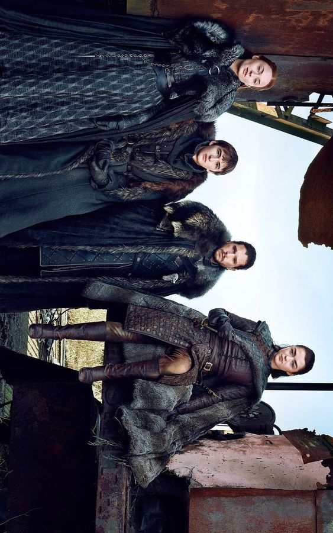
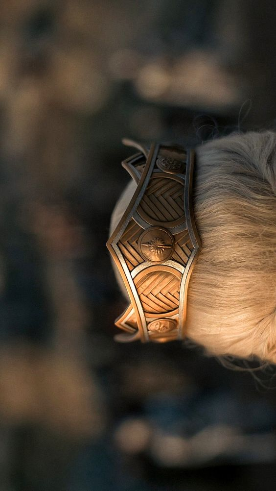

Game of Thrones conta a história de um lugar onde uma força destruiu o equilíbrio das estações, há muito tempo. Em uma terra onde os verões podem durar vários anos e o inverno toda uma vida, as reivindicações e as forças sobrenaturais correm as portas do Reino dos Sete Reinos. A irmandade da Patrulha da Noite busca proteger o reino de cada criatura que pode vir de lá da Muralha, mas já não tem os recursos necessários para garantir a segurança de todos. Depois de um verão de dez anos, um inverno rigoroso promete chegar com um futuro mais sombrio. Enquanto isso, conspirações e rivalidades correm no jogo político pela disputa do Trono de Ferro, o símbolo do poder absoluto.
Game of Thrones é uma série de televisão norte-americana criada por David Benioff e D. B. Weiss, baseada na série de livros A Song of Ice and Fire de George R. R. Martin. Eleita como a melhor série de TV do século XXI em 2020, numa votação popular feita pela revista Digital Spy, Game of Thrones foi transmitida originalmente pelo canal HBO entre 17 de abril de 2011 a 19 de maio de 2019. No elenco principal estão Peter Dinklage, Nikolaj Coster-Waldau, Lena Headey, Emilia Clarke, Iain Glen, Michelle Fairley, Richard Madden, Kit Harington, Sophie Turner, Maisie Williams, Isaac Hempstead Wright, entre outros.
Ao longo de oito temporadas e mais de sessenta episódios, Game of Thrones cobre o enredo dos primeiros cinco livros de Martin com certas modificações e a adição de material não publicado com base na descrição do autor de eventos futuros em seu universo literário. É um das série mais caras da história da televisão, cujas filmagens envolveram até quatro unidades paralelas de filmagem e a produção de efeitos visuais exigiu a participação simultânea de até quatorze estúdios em diferentes países. A série foi filmada no Canadá, na Croácia, na Islândia, em Malta, em Marrocos, na Espanha, na Irlanda do Norte, na Escócia e nos Estados Unidos.
Muito aguardada desde seus primeiros estágios de desenvolvimento, Game of Thrones foi muito bem recebida pela crítica especializada. Certos meios de comunicação, como The Washington Post, Time, The Hollywood Reporter e Rolling Stone classificaram-na como uma das melhores séries de televisão já feitas e os críticos elogiaram aspectos como suas atuações, roteiros, efeitos especiais, sequências de batalha e música. Sua primeira temporada foi indicada em vários prêmios, incluindo o Emmy do Primetime de melhor série de drama e o Globo de Ouro de melhor série dramática; Peter Dinklage, que interpreta Tyrion Lannister, venceu o Emmy do Primetime de melhor ator coadjuvante em série dramática e o Globo de Ouro de melhor ator coadjuvante em série de televisão. A série também conquistou o Emmy de melhor projeto de créditos principais, e possui uma das melhores notas entre os telespectadores para séries em exibição no site IMDb. Game of Thrones ganhou 59 Emmys, mais do que qualquer outra série de televisão.
A série entrou para o Livro de Recordes como a série dramática com a maior transmissão simultânea ao redor do mundo. O número foi alcançado graças ao segundo episódio da quinta temporada, intitulado "The House of Black and White". Na sexta temporada da série, a emissora HBO decidiu produzir um talk show para Game of Thrones, chamado After the Thrones, assim como a emissora AMC fez com a série Breaking Bad, produzindo um talk show chamado Talking Bad. Com o mesmo formato de Thronecast e Talking Dead, o programa After the Thrones apresenta recapitulações, comentários e teorias de Game of Thrones e é exibido nas segundas-feiras pela HBO Now, HBO Go, HBO on Demand e pela própria emissora HBO.